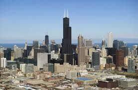
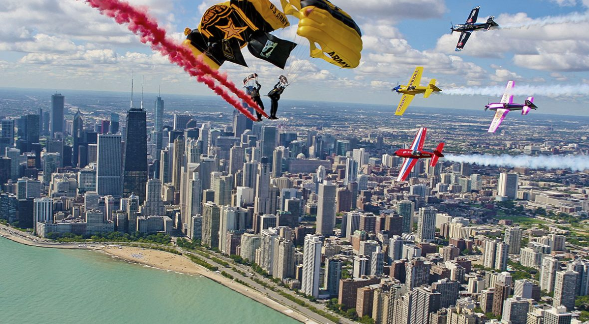

Chicago, officially the City of Chicago, is the most-populous city in the U.S. state of Illinois and the third-most-populous city in the United States. With an estimated population of 2,705,994 (2018), it is also the most-populous city in the Midwest. Chicago is the county seat of Cook County, the second-most-populous county in the US, and portions of the city extend westward into neighboring DuPage County. It is the principal city of the Chicago metropolitan area, often referred to as Chicagoland. At nearly 10 million people, the metropolitan area is the third-most-populous in the nation.
Located on the shores of freshwater Lake Michigan, Chicago was incorporated as a city in 1837 near a portage between the Great Lakes and the Mississippi River watershed and grew rapidly in the mid-19th century. After the Great Chicago Fire of 1871, which destroyed several square miles and left more than 100,000 homeless, the city made a concerted effort to rebuild. The construction boom accelerated population growth throughout the following decades, and by 1900, Chicago was the fifth-largest city in the world. Chicago made noted contributions to urban planning and zoning standards, including new construction styles (including the Chicago School of architecture), the development of the City Beautiful Movement, and the steel-framed skyscraper.
Chicago's skyline is one of the world's tallest and easily ranks among its most magnificent. It boasts four of America's eight tallest buildings and, if you include its antenna, the massive Sears (Willis) Tower remains the fifth tallest skyscraper in the world.
The Chicago Air & Water Show is an annual air show held on the shore of Lake Michigan in Chicago, Illinois. The show has been held every year since 1959 and is Chicago's second most popular festival. In 2005, 2,200,000 watched the Chicago Air and Water Show. The Chicago Air and Water Show is presented by the City of Chicago and is the largest free show of its kind in the USA.
